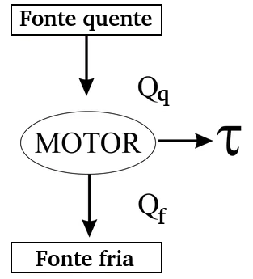
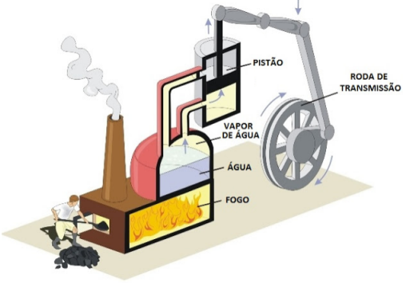
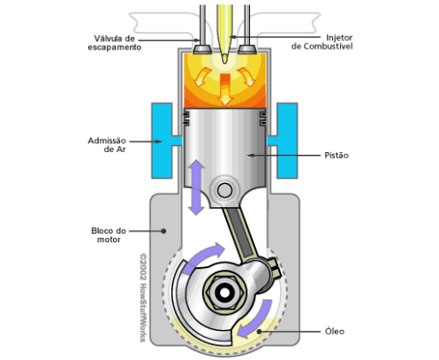
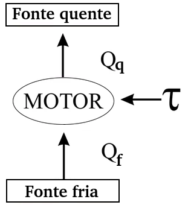
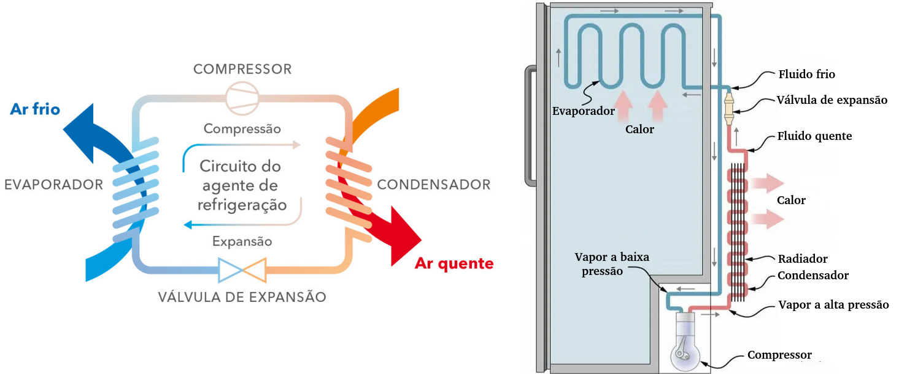

Aula6-49: Máquinas térmicas
Existem, basicamente, dois tipos de máquinas térmicas: o motor térmico e o refrigerador.
Motor térmico
|
 |
Um motor térmico consiste sumariamente em duas fontes térmicas, uma a alta temperatura e outra a baixa temperatura, que fazem fluir, entre elas, energia e, nesse processo, há a geração de trabalho, de movimento. O diagrama ao lado representa uma fonte quente que cede energia para um motor que gera trabalho. O restante da energia é cedido do motor a fonte fria: |
|
⚛ MOTOR DE COMBUSTÃO EXTERNA São os tipos de máquinas em que a queima do combustível ocorre na parte externa do motor. Um bom exemplo de máquina à combustão externa é o motor vapor: neste caso, queima-se lenha para aquecer a caldeira e esta gera o vapor que movimentará o pistão. |
⚛ MOTOR DE COMBUSTÃO INTERNA São os tipos de máquinas em que a queima do combustível ocorre na parte interna do motor. Um bom exemplo de máquina à combustão interna é o motor dos veículos modernos: neste sistema, um sistema de válvulas permite a entrada e saída de gás e combustível que é internamente queimado, gerando a expansão dos gases doque movimentarão o pistão |
|
 |
 |
➔ RENDIMENTO DO MOTOR TÉRMICO
É a razão entre a quantidade de trabalho realizado pela quantidade de calor cedido. Esta divisão representa a eficiência da máquina em transformar calor em trabalho e, esta razão, sempre será um valor entre 0 e 1, pois, como veremos futuramente ao estarmos a segunda lei da termodinâmica, o trabalho, neste tipo de máquina, nunca será maior que o calor cedido. Quanto mais próximo for o valor obtido de 1, maior será a eficiência da máquina.
Refrigerador (bomba de calor)
 |
Neste tipo de máquina térmica, em vez de nos beneficiarmos do fluxo espontâneo de energia para obtermos trabalho, cederemos trabalho em troca de um fluxo de energia de uma fonte fria para uma fonte quente. |
⚛ EX. DE REFRIGRADOR: GELADEIRA DOMÉSTICA

Os refrigeradores domésticos convencionais são constituídos basicamente de um compressor e uma válvula de expansão que acoplam-se por meio de uma tubulação em que circula um gás. O gás, ao ser expelido do compressor, é um gás de elevada pressão, em forma de vapor e a alta temperatura; na medida em que este gás ruma em direção à válvula, perde calor convertendo-se em líquido (condensando). Este líquido é então “retido” na válvula e, por ela, depois, liberado a baixa pressão e baixa temperatura. Ao dirigir-se ao compressor novamente, absorve calor convertendo-se em gás novamente.
➔ EFICIÊNCIA DO REFRIGERADOR/COEFICIENTE DE PERFORMANCE
É a razão entre a quantidade de calor absorvido a partir da fonte fria pela quantidade de trabalho cedido. Esta divisão representa a eficiência da máquina em transformar trabalho em captação de calor. Diferentemente do que ocorre no cálculo do rendimento do motor térmico, aqui o valor pode ser superior a 1. Quanto maior este valor for, mais eficiente dizemos que é o refrigerador.